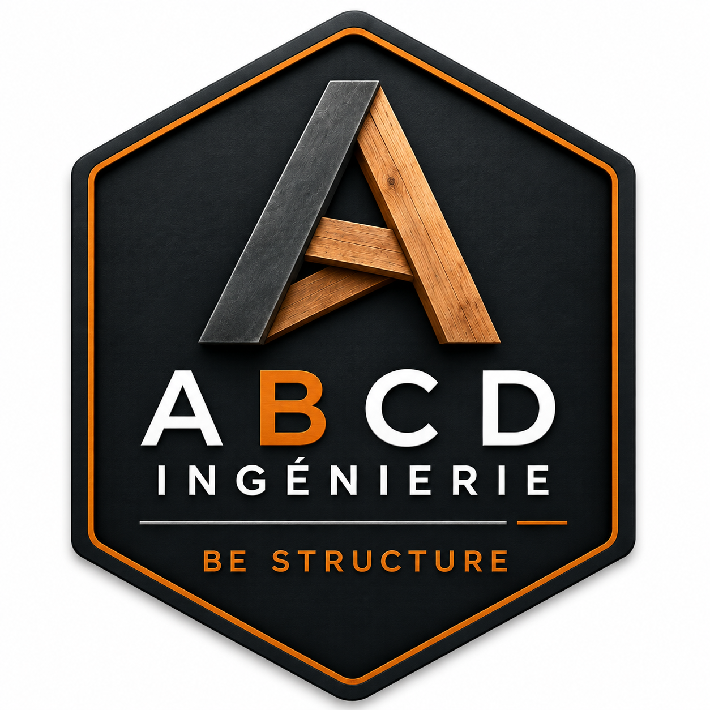
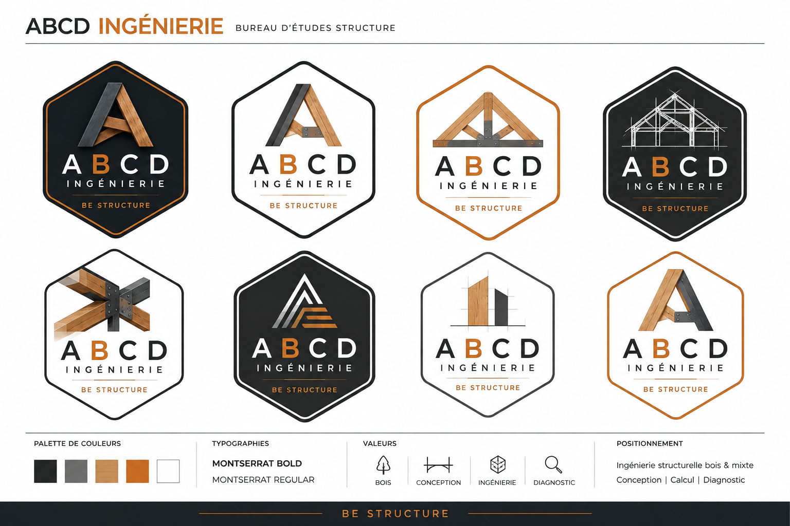

Logo officiel fourni
Version de référence à employer sur les supports clairs, avec son cadre et ses matières intacts.

Bureau d'études structure
Identité visuelle · v1.0
Le socle de communication de l'ingénierie structure bois & mixte : précis, humain et rigoureux.
01 · Marque
ABCD Ingénierie associe la chaleur du bois et la précision de l'étude structurelle. L'univers graphique privilégie les formes franches, les détails constructifs et une sobriété premium.
Bois
Conception
Ingénierie
Diagnostic
02 · Logotype
Utiliser en priorité le fichier maître vectoriel. La planche suivante réunit les déclinaisons de logo de référence. Ne jamais redessiner, étirer ou modifier les proportions du symbole.

Logo officiel fourni
Version de référence à employer sur les supports clairs, avec son cadre et ses matières intacts.
Fonds autorisés
Le PNG fourni comporte un fond clair : ne pas le placer directement sur un aplat sombre ou une photographie. Prévoir un fichier PNG/SVG transparent ou inversé pour ces usages.
Écusson
L'écusson est adapté aux avatars, favicon, marquages et signalétique. Ne pas le recadrer : conserver l'intégralité du contour.
Laisser un espace libre équivalent à la hauteur de la lettre « A » autour du logo. Aucun texte, filet ou visuel ne peut entrer dans cette zone.
Web : 150 px pour la version complète. Print : 35 mm. Sous ce seuil, employer l'écusson ; ne jamais isoler le sous-titre.
03 · Couleurs
L'anthracite et le blanc cassé structurent les supports. Le cuivre indique l'action, l'accent ou le point d'attention. Le bois est une teinte de matière, à utiliser en appui.
Principale
#202326Secondaire
#67686AMatière
#C99358Action / accent
#C96B1BFond
#F8F7F4Usage recommandé
Fond anthracite + texte blanc cassé + cuivre pour les actions, chiffres et repères.
Usage à éviter
Cuivre sur blanc cassé pour du petit texte, ou bois comme couleur de texte : le contraste est insuffisant.
Texte peu lisible
04 · Typographie
Montserrat décline toute la communication. Ne pas lui associer de police décorative, serif ou manuscrite.
Montserrat Bold · 700
Construire juste.
Titres, chiffres clés et navigation importante.
Montserrat Regular · 400
Concevoir des structures fiables, lisibles et pérennes.
Textes courants, descriptions et informations pratiques.
Sur-titre
BOIS · CONCEPTION
10–12 px · 600 · capitales
H1
Une phrase forte.
48–88 px · 700
H2 / H3
Un titre clair.
28–60 px · 700
Texte courant
Une information précise, écrite dans une langue simple.
16–18 px · 400 · 1.65
05 · Image & iconographie
Icônes linéaires, monocolores, trait fin et angles nets. Photographies documentaires : matière, assemblages, plans, chantier et ouvrage habité. L'image doit documenter l'expertise, jamais la surjouer.
Bois
Conception
Ingénierie
Diagnostic
À privilégier
Bois, acier, plans, traits de construction, géométries sobres et lumière naturelle.
À éviter
Filtres orange, images de stock trop posées, textures industrielles envahissantes, illustrations génériques.
06 · Composants & règles
Boutons
Angles droits, pas d'ombre. Cuivre réservé à l'action principale. Transition discrète de 180–220 ms.
Cartes
Titre de réalisation
L'image porte le contenu ; la légende est courte et précise.
Sans coins arrondis ou ombre portée. Bordure fine admise.
Navigation
Menu court, en capitales. Filet horizontal fin. Sur fond sombre : texte blanc cassé, action cuivre.